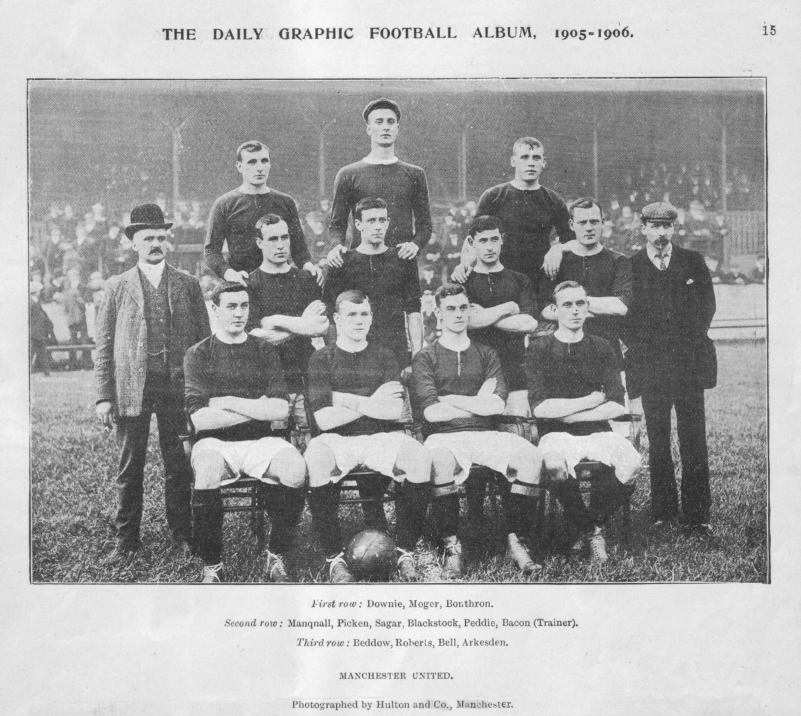

ABOUT
Manchester United Football Club, commonly referred to as Man United (often stylised as Man Utd), is a professional football club based in Old Trafford, Greater Manchester, England.
They compete in the Premier League, the top tier of English football. Nicknamed the Red Devils, they were founded as Newton Heath LYR Football Club in 1878, but changed their name to Manchester United in 1902. After a spell playing in Clayton, Manchester, the club moved to their current stadium, Old Trafford, in 1910.

HISTORY
Manchester United were formed in 1878 as Newton Heath LYR Football Club by the Carriage and Wagon department of the Lancashire and Yorkshire Railway (LYR) depot at Newton Heath.
In January 1902, with debts of £2,670(equivalent to £370,000 in 2025) the club was served with a winding-up order. Captain Harry Stafford found four local businessmen, including John Henry Davies (who became club president), each willing to invest £500 in return for a direct interest in running the club and who subsequently changed the name on 24 April 1902, Manchester United was officially born.

ACCESS
Old Trafford